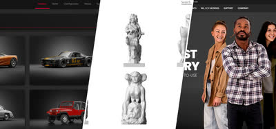
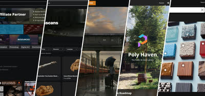
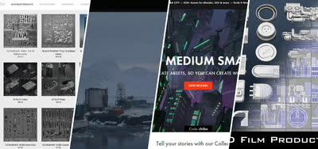
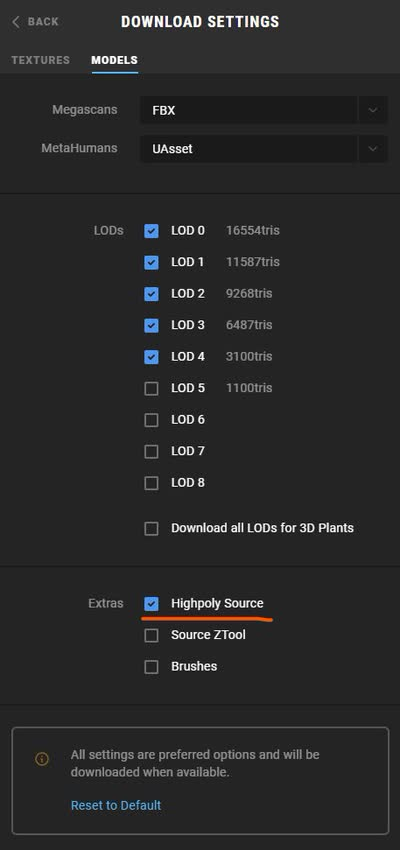
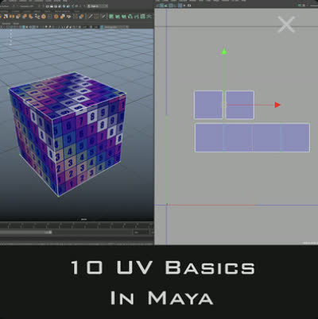

記事・リンクを検索
⌘K
ソフト・ジャンルを問わず、ちょっとした便利な発見やTipsをまとめています。
51 件のポストを収録 · 最終更新: 2026-09-06

車・人物など特定分野の3Dアセットが手に入るサイトのまとめ。Three D Scans（彫像スキャン）、Wire Wheels Club（車）、Render People（人物）の3サイトを掲載。

テクスチャ・3Dモデル・HDRIなど汎用アセットを集めたサイトのまとめ。CGTrader、Turbosquid、Poliigon、Textures.com、Poly Haven、Free3D、Megascans（Fab）、Sketchfab、Artstation Marketplaceの計9サイトを掲載。

Kitbash用アセットが手に入るサイトのまとめ。BIG/MEDIUM/SMALL、Kitbash3D、Bulgarov（Falk Boje氏やWilliam Fiorentini氏も使用）、Forma 3D Store、Terraform Studios、Andrew Hodgsonの6サイトを掲載。

ComfyUIの拡張機能「ComfyUI-OCIO」。

SideFXでインターンをしているLei W.氏による、COPsを使ったSci-fi Panelの制作手法。Pythonでレイアウトをデザインし、COPsでHeightとディテールを追加、Houdini Engine経由でUEに渡し、Naniteでテッセレーション・ディスプレイスメントを実装するワークフロー。

リアルタイムレンダリングにおけるTriplanarマッピングの計算負荷（LinkedInの投稿を引用して紹介）。UV展開が不要で便利だが、サンプル数が3倍になる分のコストは単純比例せず、L1/L2キャッシュの挙動に左右されるという技術的な補足がある。

Blenderを用いてセミプロシージャルに制作された背景作品「Port Town」の制作手法を、動画クリップ付きで解説するブレイクダウン。

Triplanarの計算負荷への対応策として、面の向きに応じてplanar projection（地面など上向きの面）とbiplanar projection（建物など横向きの面）を選択的に使い分けるという手法。

NVIDIAが公開する「OpenUSD Interactive Glossary」。Stage、Layer、Prim、Composition ArcsなどOpenUSDの主要概念を、インタラクティブな図解で視覚的に理解できるツール。

Vincent Gagnon氏による、GaeaをSubstance Designerの一部として活用する試み「Eroded Dirt Mound」。Gaeaは浸食表現に優れるがタイル化に不向きなため、Substance Designerで補いテクスチャとして使えるかを検証している。

ClaudeのBlender Connectorと同様にMCPをベースに実装された「Claude-to-Unreal Connector」。Beta版としてダウンロード可能。

Houdiniの基本原則を扱うYouTubeプレイリスト「Principled Houdini」。

非商用利用であれば無料で入手できる、140枚の空のパノラマ写真素材「Free panoramic clouds」。

Labs Lot Subdivisionについて、建物の区画作成やレンガパターン、植物・木の配置など、思いつかなかった応用アイデアが多くあり面白いという感想。

Matt Barker氏による、リファレンス写真からHoudiniでScatterする手法。写真をカメラプロジェクションし、そこにScatterして写真の色をポイントに持たせ、木のタイプに応じてポイントをソートするという3ステップの流れが解説されている。

目を鍛えるため、毎日1つ、自分が良いと思った作品を分析するチャレンジを開始する。

プロシージャルモデリングで使える様々なテクニックをまとめた動画「All* the Procedural Modeling tricks in one video」。何ができるか知ることで引き出しが増えるという考えも添えている。

木の葉のレンダリング時間を、Geometry（16秒）、Stencil（27秒）、Opacity/Texture（2分35秒）の3手法で比較検証。Solarisでは、Scatterする場合はAlphaでモデルをカットアウトし、それ以外はOpacityなしで使うのが最適ではないかと考察している。

Megascans Bridgeで「Highpoly Source」をオンにするとハイポリアセットもダウンロードできることを紹介。そのままでは重いため、近景でなければ10%以下までPoly Reduceしても問題なさそうという目安も共有している。

作品「Gate to the Afterlife」の制作全工程を追った動画。

レンダラーごとに異なるノード名をまとめて比較できるサイト「Render Node Comparison」。レンダラーを切り替えた際にノード名がわからない時に便利。

ComfyUIを使い、1枚のフレームから360度アニメーションを生成する手法。Gaussian SplattingとHoudiniも併用することで精度が向上する。Miguel Angel Arribas Sánchez氏による手法。

HoudiniのVEXを使ったプロシージャルな木材シェーダーの作り方を解説する動画。

Megascansなどのスキャンアセットを組み合わせることで、低コストでリアルな岩や崖を制作できる手法（参考動画つき）。同じ作品で、崖に草を生やすマスクをNormal+AO併用で作るとよりリアルになるというTipsも。

NukeとComfyUIを組み合わせたクリーンアップ手法を解説する動画。

3ds MaxのForest Packを開発するITOO SOFTが公開している背景制作のTips。使用ソフトが異なっても根本の考え方は共通するため勉強になるとしている。

Houdiniに関する有益なTipsがまとめられたGitHubリポジトリ「MysteryPancake/Houdini-Fun」。

Houdiniで便利なノードセットアップがまとめられているサイト「codercat」。

植物が空間の空いている方向に伸びる性質をCGで表現することで、よりリアリティが増すというテクニック。
UDIMが何十枚にもなるような大規模アセットのテクスチャリングに役立つ、Substance Painterの「Layer Instancing」機能。

流体シミュレーションツール「Axiom」を開発したMatt氏が、新しいソルバーをリリースした。

Houdiniのスナップショットを基にNano Bananaで画像を生成し、ComfyUIでHoudiniのFlipbookと組み合わせるワークフロー「3D to ComfyUI」。

Blender 5.0でフォトリアルな空を表現する方法を解説した動画。

Houdini Solarisで名前を使ってマテリアルをアサインする方法を解説した動画。

VFXにおけるAIのワークフローを共有するプラットフォーム。

Jakub Bazyluk氏による都市デザイン作品「Circles」の制作ブレイクダウン。

無料で入手できる22個の木のアセット。

映画『モアナ2』の構図とライティングの分析（LinkedIn）。投稿者は他の映画についても分析している。

汎用アセット・特定アセット・キットバッシュを扱う3Dアセットサイト。CGTraderやTurbosquidなど、テクスチャ・HDRIも扱う汎用サイトが紹介されている。

V-Ray for Houdiniでのディスプレイスメント適用方法についてのTips。単一のDisplacementならobj階層でマテリアルをアサインし、複数のDisplacement Mapを使う場合はsop階層でPackしてからマテリアルをアサインする、という手順を解説している。

Vitaly Bulgarov氏によるSci-fi向けキットバッシュアセット「MEGASTRUCTURE」。海外のアーティストに広く使われている印象がある。

HDRIが入手できるサイトのまとめ。Poly Heaven（無料）、Textures.com（サブスク）、Poliigon（一部無料）、CGEES（無料）、HDRI Skies（一部無料）、MattePaint.com（サブスク）、Greyscalegorilla（サブスク）、HDRMAPS（一部無料）、HDRI Hub（一部無料）、Artstation Marketplace（有料）の10サイトを掲載。

地形の3Dスキャンモデルを購入できるサイト「The Terrain Domain」。Megascansにはないような地形も多く扱っている。

Houdiniで「Alt+Shift+M」を押すとキャッシュマネージャーが開けるというショートカットTips。

彫刻などの3Dモデルを無料で入手できるサイト「Three D Scans」。商用利用の可否は不明だが、自主制作には十分使える。

無料で使える高品質な車の3Dアセットを提供するサイト「Wire Wheels Club」。

ActionVFXが提供する無料のカメラシェイク素材。Nukeでトラッキングすることでリアルなカメラシェイクを再現できる。

Houdini Solaris向けのライティングテンプレート。単一ショット用だけでなく複数ショット用のテンプレートもある。

HoudiniのAIアシスタント（LinkedInで紹介）。デバッグやノード・パラメーターの分析を行ってくれる。

Blizzard Entertainment所属で映画『Dune』にも参加したAndrew Hodgson氏による、UV展開の実演。過去に多田学氏のセミナーでも参考ポートフォリオとして紹介されていた。

HoudiniでMegascansのAtlas機能を使って葉っぱのアセットを作成する手法。この手法はゲーム『アサシンクリード』でも使用されている。Megascansは葉っぱ系アセットの種類が少ないため、こうしたテクニックが役立つとしている。